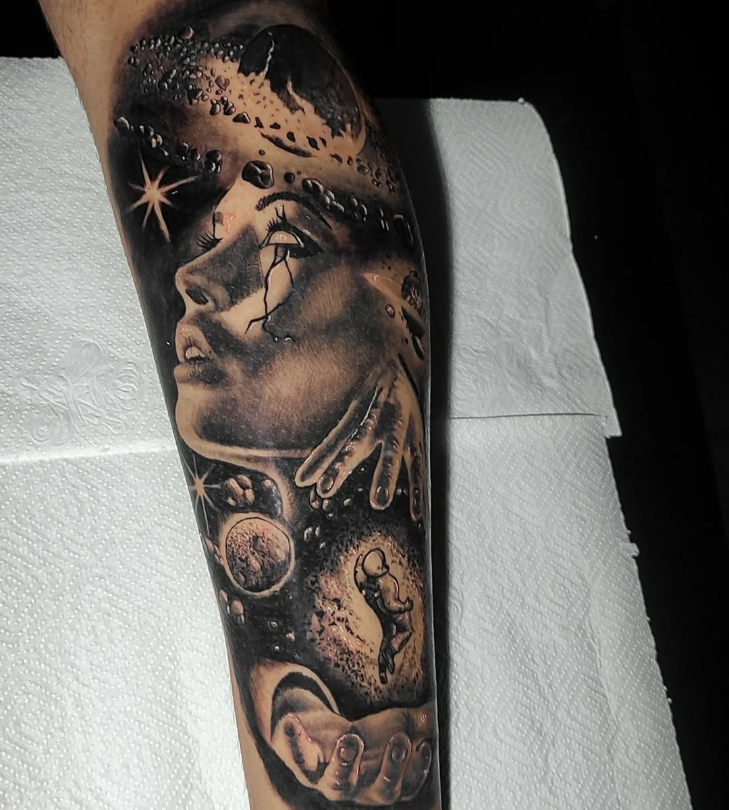
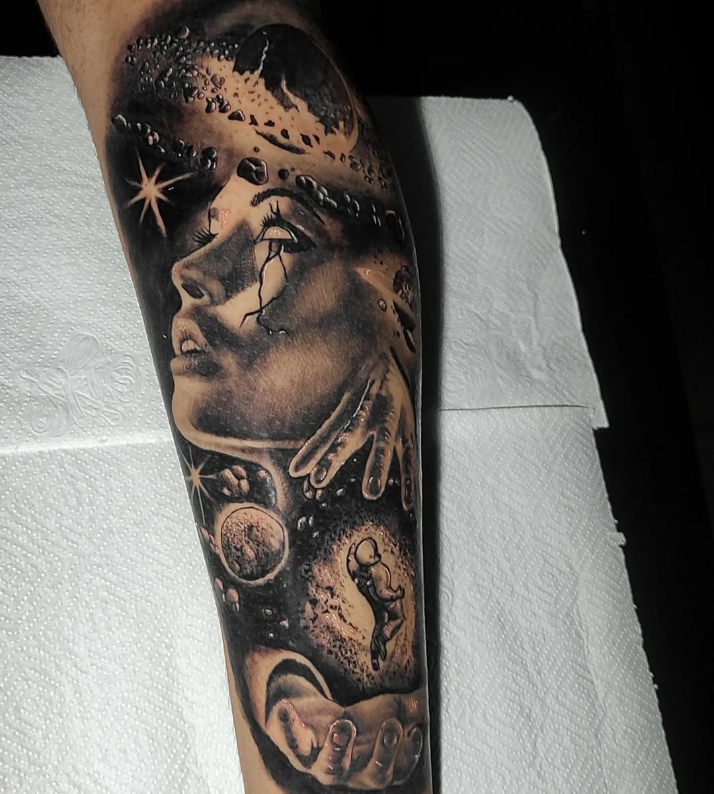

Sou [Seu Nome], tatuador profissional e fundador do Studio Torres. Desde que fiz minha primeira tatuagem, descobri uma paixão pela arte na pele — um espaço onde criatividade, técnica e significado se encontram. Com anos de experiência no mundo da tatuagem, me especializo em [estilos que você faz, ex: realismo, blackwork, pontilhismo], sempre buscando criar algo único para cada cliente. Acredito que tatuar é mais do que desenhar: é contar histórias, expressar identidades e eternizar momentos. No Studio Torres, cada detalhe importa — desde o primeiro risco no papel até o brilho no olhar de quem sai realizado. Trabalho com equipamentos modernos, materiais de alta qualidade e foco total na higiene, segurança e conforto. Se você valoriza arte, profissionalismo e atendimento personalizado, será um prazer te receber no nosso estúdio.


 

Studio Torres está localizado na cidade de Votuporanga - SP
Avenida Joaquim Jose de Moraes, 2606
Parque Residencial Santa Amélia
Votuporanga - SP
CEP: 15503-174